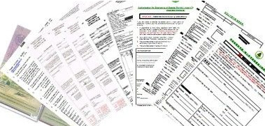
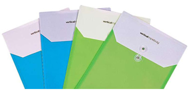

仓储公路运输
Storage and highway transportation
出口报关程序
一、换通关单（仅针对商检货物）
客户需提供资料：出口换证凭条
日期：装箱前一日
所需时间：0.5小时
商检货物分为三类：
1、客户要求商检的：客户为保证自己收到的货和合同订立的一致，
要求卖方办理商检并出具商检单。
2、中国规定法检货物：出口货物有些国家规定必须在出口前作商检。
3、进口国需要法检的货物：进口国可能对某些中国出口的货物规定
必须检验。根据进口国规定，检验可在中国进行，也可能在进口
地进行。

二、准备报关资料
客户需提供资料：《中华人民共和国海关出口货物报关单》原件一份
《装箱单》原件一份
《形式发票》原件一份
《产品说明》原件一份
《报关委托书》原件一份
《通关单》原件一份
日期：装箱前一日
所需时间：0.5小时

三、我司现场报关员将报关资料
日期：装箱当日
所需时间：0.5小时
四、联系并安排查验（若海关安排查验）
日期：装箱当日
所需时间：根据海关安排查验的时间而定，查验时间一般为2-3小
时。
五、海关放行，报关报检业务结束
日期：装箱当日或次日
所需时间：0.5小时
进口报关程序
一、法定检验货物 监管代号“A”
需提供报检资料：提单、发票、箱单、合同、报检委托书，其他特
殊单证。办理“入境货物通关单”，产生入境货物通关单号（如收
货地在异地，需办理商检调离查验手续）。
二、非法定检验货物
需要提供报检资料：提单、发票、箱单、合同、报检委托书，其他
特殊单证。办理时间为0.5-1个工作日
报关：
非法定检验货物（先报关或先报检都可以）
法定检验货物，必须先报关
需提供报关资料（提单，发票，箱单，合同，报关委托书，其他特
殊单证）
货物的基本信息（如：HS，中文品名，以及相对应HS的申报要素）
流程：
1、填报关单。根据提供的相关资料填写手写报关单；
2、平台录入。在EDI海关申报平台预录相关数据，校验无误后发送
3、收到海关回执（放行或退单）：如退单，则根据退单理由，提供
相关依据资料后，重新发送海关。
4、拉纸质报送单。收到电子放行回执，拉出纸质报关单，进行现
场接单申报。
5、付税。收到电子放行回执后，即可向申报海关缴纳进口税金。
支付方式：东方电子支付平台支付，或本票支付。
6、审单核税。付税后现场海关接单审单核税
7、放行。
查验：
如遇海关查验，则需要安排查验计划，提交查验所需资料，货物产
品说明等。
如查验没问题，则现场放行。
如查验有问题，则做关封，海关内部流转至申报海关进行相应处理，
处理完成后，放行。